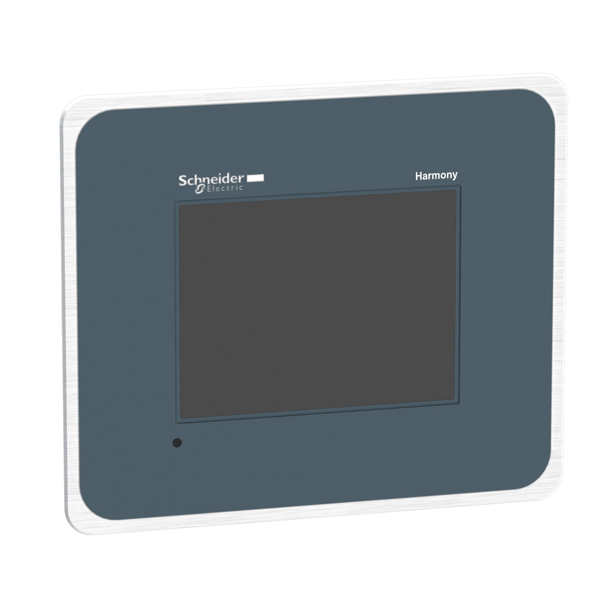

Como podemos ver, tenemos una pantalla táctil la cual pertenece al conjunto del videoportero automático qué nos permitirá echar un ojo antes a quién nos venga a visitar.
El elemento llamativo que nos encontramos aquí es el control de acceso vía huella digital, la cual es mucho más seguras que otros tipos. Y es menos frecuente de encontrar, sin embargo es más segura qué una cerradura manual.
